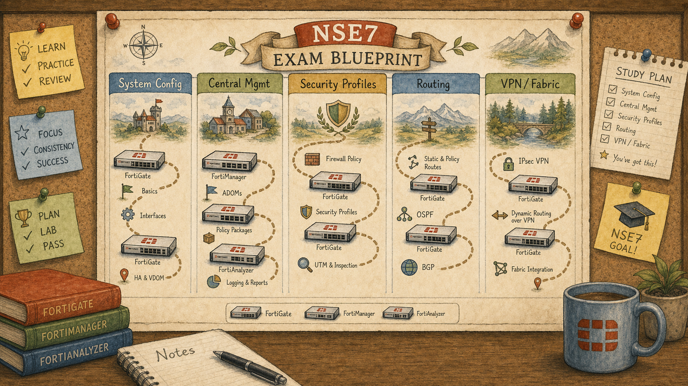

Where We Are in the NSE7 Journey

An illustrated exam-blueprint wall poster pinned to a corkboard, drawn in storybook style.
Before the configs and before the labs, the question every enterprise asks is the same: who owns this firewall and who answers the phone when something breaks at 2 a.m.? NSE7 is the exam Fortinet built for the people whose hand is on that phone.
The Problem We're Solving Today
The NSE7 EF exam is not a features quiz. It is a composition exam: how FortiGate, FortiManager and FortiAnalyzer act as one accountable system. Without that mental map up-front, every later session feels like a disconnected fact.
Key Concepts
- Who the exam targets (3 yrs networking, 3 yrs security, 2 yrs Fortinet)
- Exam mechanics — 70 minutes, 30–40 questions, pass/fail
- The five blueprint domains: System Config, Central Mgmt, Security Profiles, Routing, VPN
- Product versions tested: FortiOS 7.6, FortiManager 7.6, FortiAnalyzer 7.6
- Why the exam tests integration of three products, not features of one
Ready to Begin the Session
| Official NSE7 EF Blueprint Objectives |
|
| Prerequisites | None — start here. |
| Estimated Duration | 25-30 minutes |
| Phase | Phase 1 — Foundations: Network Security Architecture |
Session 01 — The NSE7 Story — Roles, Audience & Exam Map Where we are in the NSE7 journey: Before the configs and before the labs, the question every enterprise asks is the same: who owns this firewall and who answers the phone when something breaks at 2 a.m.? NSE7 is the exam Fortinet built for the people whose hand is on that phone. The problem we're solving today: The NSE7 EF exam is not a features quiz. It is a composition exam: how FortiGate, FortiManager and FortiAnalyzer act as one accountable system. Without that mental map up-front, every later session feels like a disconnected fact. Session goal: From memory, name the five NSE7 EF blueprint domains and place each session of this curriculum into one. Key concepts: • Who the exam targets (3 yrs networking, 3 yrs security, 2 yrs Fortinet) • Exam mechanics — 70 minutes, 30–40 questions, pass/fail • The five blueprint domains: System Config, Central Mgmt, Security Profiles, Routing, VPN • Product versions tested: FortiOS 7.6, FortiManager 7.6, FortiAnalyzer 7.6 • Why the exam tests integration of three products, not features of one
What We Discovered Together
Parsed from the persistent session summary produced at the end of the Socratic investigation. Use it to rebuild context before a review or a lab.
Session Information
Session Number: 01
Topic: NSE7 Roles, Audience & Exam Map
Date: July 2026
Certification: Fortinet NSE7 Enterprise Firewall 7.6
Story Progress
Setting: First day as a consultant engagement at a mid-sized financial services firm. The CTO has presented a scope of work document covering a multi-site enterprise firewall deployment using FortiGate, FortiManager, and FortiAnalyzer.
The session opened with a single CTO question: "Why do we need three separate products? Why isn't one firewall enough?" This question framed the entire session — the student had to reason from first principles about why enterprise scale creates problems that a single device cannot solve.
No ongoing story characters introduced yet. The fictional company and its network topology will develop in future sessions as we begin implementing actual features.
Outstanding: The split-policy architecture at Vaultline Financial (Sessions 39-40 in a parallel learning thread) remains a natural future engineering scenario. Session 01 establishes the mental foundation before any configuration work begins.
Concepts Learned
1. Why Three Products Exist — Separation of Concerns
FortiGate enforces policy at the data plane. FortiManager defines and distributes policy at scale from a single control plane. FortiAnalyzer records, stores, and interprets log data for both engineering troubleshooting and executive reporting.
The three-product architecture exists because enterprise scale creates problems that a single device cannot solve:
- 50 firewalls across 20 sites cannot be managed with individual CLI sessions
- Log data scattered across 40 devices cannot be searched efficiently in a security incident
- Policy consistency cannot be guaranteed without a centralised distribution mechanism
2. FortiAnalyzer Serves Two Audiences
A key insight discovered during the session: FortiAnalyzer serves two completely different audiences from the same data source. Engineers need raw granular log data for troubleshooting. Executives need structured reports that tell a business narrative. FortiAnalyzer is not just convenient at scale — it becomes the only practical answer when searching 30 days of logs across 40 devices.
3. The NSE7 is an Integration Exam, Not a Features Exam
The exam tests whether candidates can reason about how all three products work together to solve a business problem. It is a composition exam: how FortiGate, FortiManager, and FortiAnalyzer act as one accountable system. This changes the study approach — always ask which product owns a responsibility and why, not just how a feature is configured.
4. Candidate Experience Profile
Fortinet targets candidates with:
- 3 years of general networking experience
- 3 years of network security experience
- 2 years with FortiGate, FortiManager, and FortiAnalyzer specifically
The Fortinet-specific requirement (2 years) is lower than the networking and security requirements because the exam assumes candidates arrive as already-experienced professionals. Importantly, the 2-year Fortinet requirement names all three products — not just FortiGate.
5. Exam Mechanics
- 70 minutes, 30–40 questions
- Approximately 90 seconds per question
- Pass/fail scoring
- Languages: English and Japanese
- Products tested: FortiOS 7.6, FortiManager 7.6, FortiAnalyzer 7.6
The time constraint means questions test whether understanding is already internalised — not whether a candidate can reason through an unfamiliar problem under pressure. By exam day, the mental models must be built in.
6. The Five Blueprint Domains
The student reconstructed all five domains from first principles without being told them:
Domain 1 — System Configuration
Hardware acceleration, HA clustering, Security Fabric, VLANs and VDOMs, operation modes. The broadest domain — groups foundational infrastructure topics that underpin all other domains.
Domain 2 — Central Management
FortiManager: policy packages, device management at scale, template deployment, single pane of glass administration.
Domain 3 — Security Profiles
SSL/SSH inspection, web filtering, application control, IPS, ISDB. Next-generation firewall capabilities beyond simple packet filtering.
Domain 4 — Routing
OSPF and BGP in enterprise networks. Routing protocol understanding is a prerequisite for ADVPN and complex VPN topologies.
Domain 5 — VPN
IPsec IKEv2 and ADVPN (on-demand tunnels). The domain with the heaviest cross-domain dependencies.
7. Cross-Domain Dependencies
ADVPN (Domain 5) requires simultaneous understanding of:
- Routing protocols (Domain 4) — ADVPN uses BGP or OSPF for dynamic route advertisement
- System configuration (Domain 1) — HA and redundancy affect VPN design
- Central management (Domain 2) — ADVPN templates are deployed at scale via FortiManager
This makes ADVPN one of the most likely sources of complex multi-domain exam questions.
My Understanding
Strong Areas:
- Immediately identified the management and visibility problems that FortiManager and FortiAnalyzer solve
- Correctly identified that FortiAnalyzer serves two different audiences (engineers vs executives) without prompting
- Successfully reconstructed all five blueprint domains from first principles through reasoning
- Correctly identified ADVPN as having the heaviest cross-domain dependencies after discussion
- Strong intuition that NSE7 is an architectural exam rather than a feature quiz
Initial Struggles:
- Experience requirements: guessed 5 years combined, then 1/1/1. Needed two attempts to reach 3/3/2.
- Initially suggested security profiles as the domain with most cross-domain dependencies before reconsidering
Misconceptions Corrected:
- None significant in this foundational session. The student's reasoning was consistently directionally correct.
Moments of Strong Reasoning:
- "More designing at an architectural level using these core Fortinet products" — identified the exam's architectural intent without being told
- Correctly mapped all three product scenarios (FMG, FGT/FAZ, FAZ) with accurate reasoning about when each applies
- Correctly noted that at scale, FortiAnalyzer isn't just convenient — it becomes the only practical answer
Troubleshooting Experience
No specific fault scenarios in Session 01. This session was foundational — establishing the mental map before any troubleshooting methodology is introduced.
Connections
Previous Sessions:
This is Session 01. No prior sessions to connect.
Future Topics:
Every subsequent session maps into one of the five domains established today. Session 02 will likely introduce Security Fabric (Domain 1) or begin the FortiManager architecture (Domain 2). The cross-domain dependency insight will become increasingly important as ADVPN approaches.
Important Takeaways
1. The NSE7 is a composition exam. It tests how three products work together — not features of one.
2. FortiAnalyzer serves two audiences from one data source: engineers need raw logs, executives need structured reports. Scale is what makes it a necessity rather than a convenience.
3. The five domains are not isolated silos. ADVPN is the clearest example of a topic that cannot be understood without understanding routing, system configuration, and central management simultaneously.
4. The exam gives approximately 90 seconds per question. By exam day, the mental models must be internalised — not recalled under pressure.
5. The Fortinet experience requirement (2 years) names all three products explicitly. This confirms that the exam expects operational familiarity with FortiManager and FortiAnalyzer — not just FortiGate.
6. Exam questions that appear to test one domain often test another simultaneously. A VPN question may actually be testing routing knowledge. Always read scenario questions with cross-domain awareness.
Future Session Notes
Concepts Requiring Reinforcement:
- The five blueprint domains — worth revisiting at the start of the next session to confirm retention
- The experience requirements (3/3/2) — a small detail worth confirming sticks
Spaced Repetition Recommendations:
- In 2 sessions: ask the student to map the current topic into its blueprint domain unprompted
- In 5 sessions: ask the student to explain which domain has the most cross-domain dependencies and why
- Throughout the course: begin every session by naming the blueprint domain before diving into content
Story Elements to Continue:
- The fictional company has not yet been named or developed. Session 02 should introduce the company, its network, and the first engineering challenge.
- Recommend continuing the Vaultline Financial story established in Sessions 39-40 if those sessions exist in the same learning thread.
Natural Opportunities for Future NSE7 Topics:
- Security Fabric (Domain 1) — natural next step: what does the Fabric mean for multi-product visibility?
- FortiManager architecture (Domain 2) — the student already understands why it exists; now build how
- HA clustering (Domain 1) — the open Vaultline cliffhanger is a ready-made introduction
Guides, Bites & Nibbles
Additional resources sorted to this session — deeper guides, focused explainers, and quick-reference cards.